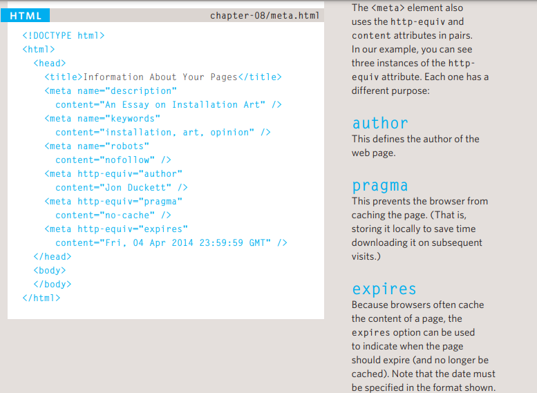

.png)
Para agrupar tudo com um ID, devemos usar div id=, então tudo que estiver contido dentro será relacionado ao id do div.
Isto você está vendo
O atributo id pode ser dado a cada elemento, diferenciando o mesmo dos otutros
Assim se precisar, podemos acessar e modificar x parte pelo ID, fazendo uso do CSS.
Outro exemplo em que o ID é necessário, é o JAVASCRIPT. Pois ele precisa do ID dos elementos para poder criar uma interação.
Parecido com o id, mas as vezes vamos querer destacar partes de um texto, podemos usar o class.
Basta agora usar o css para modificar o atributo class blue. Assim toda class blue, ficara azul, por exemplo.
Para agrupar tudo com um ID, devemos usar div id=, então tudo que estiver contido dentro será relacionado ao id do div.
Para podermos fazer isso o comando será o span class na palavra.
Por exemplo:A história é complexa e devemos entender.
O mais comum é ver pessoas usando o span, para controlar o estilo da fonte usando CSS.
that has been cut into your page — and in that window you can see another page. The term iframe is an abbreviation of inline frame.
O elemento Meta, estará sempre contido dentro do head, pois ele conterá informações sobre a página web.
Este elemento é vazio, logo não tem tag de fechamento, pois ele usa atributos para carregar as informações.
Os atributos mais comuns são: name e content.
O valor de name é a propriedade que você está configurando.
Já o content, é o valor que você quer dar à propriedade
description, contém a infnormação da página, é usado por search engines.
Robots, A value of nofollow can be used if search engines should add this page in their results but not any pages that it links to.
